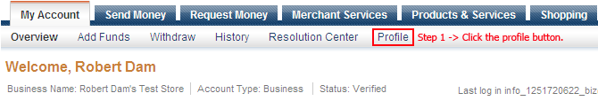
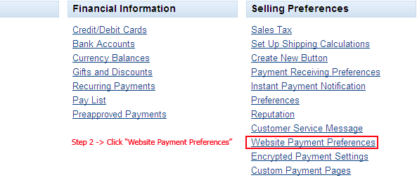
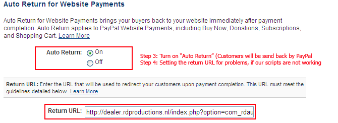
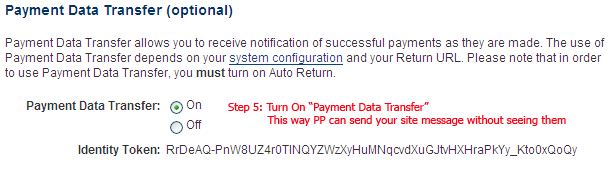

PayPal Currencies you should use:
There are a few PayPal currencies, the following can be used in the currency form:
You can use the 3 didgit uppercase letters. If you do not define them well, PayPal will use USD.
AUD - Australian Dollar
CAD - Canadian Dollar
CHF - Swiss Franc
CZK - Czech Koruna
DKK - Danish Krone
EUR - Euro
GBP - Pound Sterling
HKD - Hong Kong Dollar
HUF - Hungarian Forint
JPY - Japanese Yen
NOK - Norwegian Krone
NZD - New Zealand Dollar
PLN - Polish Zloty
SEK - Swedish Krona
SGD - Singapore Dollar
USD - U.S. Dollar
PayPal Sandbox - Test Environment
The PayPal Sandbox is a testing environment that is a duplicate of the live PayPal site, except that no real money changes hands. The Sandbox allows you to test your entire integration before submitting transactions to the live PayPal environment. Create and manage test accounts, and view emails and API credentials for those test accounts.
If you turn on "PayPal in Testmode?", your payments will go to the PayPal sandbox.
You need 2 test accounts in the sandbox, they can be created easily in the Sandbox Environment.
After you have created the sandbox accounts, you need to use these accounts in the RD-Ticketmaster Confuguration. (You need a seller account and a buyer account.)
Setting Up Your PayPal account to use with RD-Ticketmaster.
1. First login to your PayPal account, you will see the maintab, called: "My Account" the subtab contains an item called: "Profile". Click on the profile button.

2. Look for the link "Website Payment Preferences"

3 & 4. Turning on some PayPal features that we're using to process money to you.
The return URL is always containing your own domainname, so it will be something like:
http://www.yoursite.com/index.php?option=com_ticketmaster&controller=transaction&task=process

5. Turn On data Payment Transfers.
Do NOT use our Identity Code, you will receive your once your account has been set up! Use this code to communicate with PayPal (PP)

6. Let's click the save button and copy your Identity Code from PayPal to the RD-Ticketmaster Configuration screen.
After clicking the save button your own Identity Code will appear in the next page. Otherwise you van go back to Website Payments Transfer page to copy it.
You will now be able to receive money and money information from PayPal into your website.